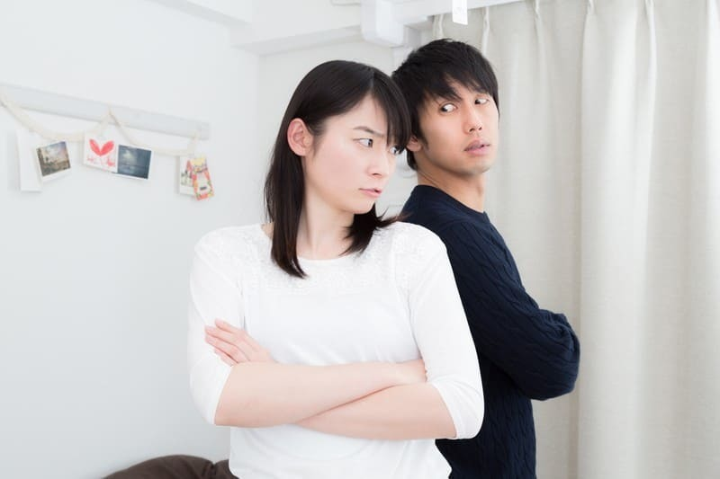

夫源病の鍼灸
夫（またはパートナー）の言動への慢性ストレスから心身に不調が出る状態。適切な距離感づくりと自律神経ケアで心身の負担を和らげます。
まず知っておきたい要点と改善の流れ
夫源病は医学的診断名ではありませんが、夫の何気ない言動や態度、在宅時間の増加などによる慢性的なストレスが原因で、情緒不安定・イライラ・頭痛・めまい・動悸・不眠など心身両面に不調が生じる状態です（同様に妻へのストレスで起こる妻源病もあります）。更年期障害やうつ病が背景に重なることも多いため、必要に応じた医療機関受診と夫婦間の適切な距離感づくり、自律神経のケアが大切です。（公式解説）
このようなお悩みはありませんか？
- ✓パートナーの言動や帰宅・在宅時間の増加で強いイライラや不安が出る
- ✓情緒不安定に加え頭痛・めまい・動悸・肩こり・不眠が続いている
- ✓家庭内で気を張り続け自分の休息時間が持てず疲れが抜けない
- ✓更年期症状やうつ病と重なっていないか気になっている
当院の施術アプローチ・改善の流れ
なぜ鍼灸で改善へ向かうのか？（作用機序の図解）
夫源病に対する鍼灸は、体性-自律神経反射による交感・副交感神経の切替機序を通じて、お体本来の回復力を引き出します。

首肩・みぞおち・手足の過緊張ポイントへ、交感神経を刺激しすぎない優しい刺激を行います。
体性-自律神経反射を通じて脳幹の迷走神経核へ働きかけ、心拍変動（HF/SDNN）を整えます。
過剰なコルチゾール分泌や過覚醒状態を落ち着かせ、深い呼吸と入眠スイッチを引き出します。
「活動（昼）」と「休息（夜）」のメリハリが戻り、動悸・不眠・倦怠感の波が穏やかになります。
院長YouTube解説・関連動画
公開日：２０２１年 １１月２３日
更新日：２０２１年 １１月２５日
今日は夫源病について解説させていただきます。
☆本記事の内容
・夫源病とは
・夫源病の原因
・夫源病の症状
・夫源病の改善方法
・夫源病のまとめ
目次
- •夫源病は、夫によってのストレスが原因で起こる心身的な不調
- •夫源病の原因は、夫の言動や態度に強いストレスを感じること
- •夫源病の特に代表的な症状は情緒不安定
- •夫源病の改善方法は、夫と距離を置くこと
- •いい距離感を探ることが良い夫婦生活を送る上で大切
🎥 他のYouTube切り抜き・解説を読む（あと1件）▼
夫源病は、夫によってのストレスが原因で起こる心身的な不調

夫源病は、夫によってのストレスが原因で身体的にも精神的も不調が現れることです。夫の言動や態度にストレスを感じることで情緒不安定になったり、頭痛やめまいが起きたりします。
ストレスを感じるのは妻だけではありません。夫によってのストレスで起こる夫源病だけでなく、妻によってのストレスで起こる妻源病も多く起こっています。
夫源病の原因は、夫の言動や態度に強いストレスを感じること
夫源病の原因は、夫の言動や態度に対して強いストレスを感じることです。少しの価値観の違いや生活習慣や子育て、仕事に対しての夫婦での考え方の違いが少しずつ溜まっていき、夫源病につながるのです。
ストレスの感じ方は人によって違います。周りには理解されないストレスもさらにストレスとなり症状を引き起こすのです。
妻源病も同じように妻の言動や態度に対して強いストレスを感じることが原因で起こります。
メニエール病・難治性めまい・耳鳴りのツボ図解
実際の施術ではお一人おひとりの体質・症状に合わせて選穴しますが、メニエール病・前庭性片頭痛・耳鳴り・難治性めまいの内耳循環ケアの臨床でよく用いられる代表的なツボの目安です。

📌 代表的なツボの詳細一覧表を開く（6穴） ▼
| ツボ名 | 位置の目安 | 主な狙い | セルフケアの注意点 |
|---|---|---|---|
| 聴宮（ちょうきゅう） | 耳の穴の前、口を開けるとくぼむ場所 | 内耳周囲の微小循環改善・耳閉感や耳鳴りケア | 強く押さず口を少し開けて優しく触れます。 |
| 翳風（えいふう） | 耳たぶのすぐ後ろのくぼみ | 内耳・三叉神経・顔面周囲の血流とリンパ循環促進 | めまい発作直後は首を動かさず静かに温めます。 |
| 風池（ふうち） | 後頭部の生え際のくぼみ | 後頭下筋群の緊張緩和・椎骨動脈血流サポート | 親指で上向きに優しく支えるように押します。 |
| 完骨（かんこつ） | 耳の後ろの出っ張った骨の下後ろ | 平衡感覚の安定・睡眠の質改善 | 左右の張りを比べながら優しく緩めます。 |
| 内関（ないかん） | 手首の横ジワから指3本分肘寄りの中央 | めまいに伴う吐き気・自律神経発作の鎮静 | めまいが出そうなときのセルフ指圧にも有効です。 |
| 太衝（たいしょう） | 足の甲、親指と人差し指の骨の間 | ストレス性の内リンパ水腫悪化・イライラの緩和 | 深呼吸と合わせて3〜5秒ずつ押します。 |
国際査読論文の科学的エビデンス
国際的な医学データベース（PubMed・Cochrane等）で報告されているメニエール病・前庭性片頭痛・耳鳴り・難治性めまいの内耳循環ケア領域の代表的な査読済み鍼灸研究をまとめています（標準治療との併用や研究上の限界を含めて正確に掲載）。
📚 査読論文データ・PubMed出典リンクを開く（4件） ▼
| 年・研究デザイン | 対象・規模 | 主な結果 | 限界・出典 |
|---|---|---|---|
| 2025年 メタ解析 | 自律神経不調を伴う疾患 10 RCTs（n=744） | 全体適応力指標SDNNが有意改善（MD 13.59, p=0.0091）、重篤な有害事象ゼロ。 | LF・HF・LF/HFは有意差なし、異質性高。 Front Neurosci (PMID: 41230507) |
| 2023年 メタ解析 | 手技鍼 vs シャム鍼 9 RCTs | 実鍼群でのみ施術前後の副交感神経指標HFおよびLF/HF比が有意変化。 | 一次研究の質・異質性にばらつきあり。 Complement Ther Med (PMID: 36494036) |
| 2024年 RCT | 食後愁訴症候群（PDS）解析51名 | 症状反応率（p=0.001）、迷走神経活性HF上昇（p≤0.001）、LF/HF低下（p≤0.001）。 | 単施設・小規模（脳腸相関の根拠）。 Chin Med (PMID: 39568071) |
| 2022年 国内RCT | 更年期女性 48名（日本式鍼7穴×4週） | 鍼群の79%で心拍数が5%以上低下（P<0.01）、鍼中のHF上昇・起立時LF/HF低下を確認。 | 更年期女性限定・4週間の短期評価。 Med Acupunct (PMID: 36311889) |
参考文献・出典
- 銀座そうぜん鍼灸院「夫源病の公式解説ページ」
- 2025年 メタ解析（自律神経不調を伴う疾患 10 RCTs（n=744））— Front Neurosci (PMID: 41230507)
- 2023年 メタ解析（手技鍼 vs シャム鍼 9 RCTs）— Complement Ther Med (PMID: 36494036)
- 2024年 RCT（食後愁訴症候群（PDS）解析51名）— Chin Med (PMID: 39568071)
- 2022年 国内RCT（更年期女性 48名（日本式鍼7穴×4週））— Med Acupunct (PMID: 36311889)
よくある質問（FAQ）
Q. 病院と鍼灸院のどちらへ相談すればよいでしょうか？▼
Q. 施術中はプライベートな相談を安心してできますか？▼
あわせて読まれる関連疾患（自律神経のお悩み）
入眠困難や中途覚醒などが続き日中の不調を招く状態です。自律神経の過緊張を鎮め、心身が休息しやすい環境を補完的に整えます。
検査で明確な異常が見つからないのに多彩な自覚症状が続く状態。医療機関での除外診断を前提に、自律神経と深層筋の緊張を整えます。
気圧・気温・湿度の変化で頭痛やめまい・だるさが出る状態。原因疾患の有無を確認しつつ、首・耳周囲・背部の血流と自律神経を整えます。
昼食時に一人になることへの強い不安や対人プレッシャーで心身が緊張する状態。必要に応じた相談と並行し、膻中等で自律神経を整えます。
身近な人との情緒的な共感の乏しさと周囲の無理解から心身が疲弊する状態。心理支援と並行し、百会・期門等で自律神経と倦怠感を整えます。
抗うつ薬等の影響で脳内セロトニンが過剰になり発症する急性薬物障害。救急医療が絶対最優先で急性期は鍼灸対象外です。
おひとりで悩まず、まずはご相談ください
銀座本院・川口・大宮・横浜・博多・田無の各院でご予約を承っております。